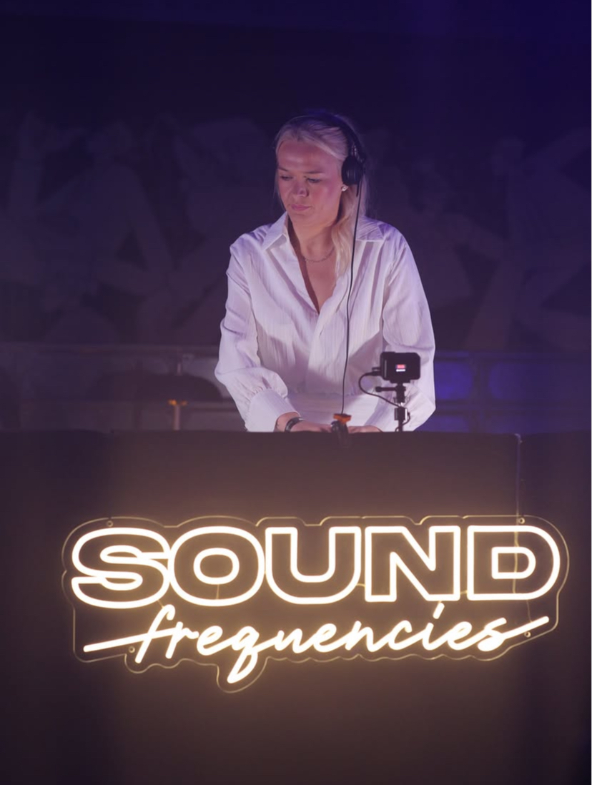
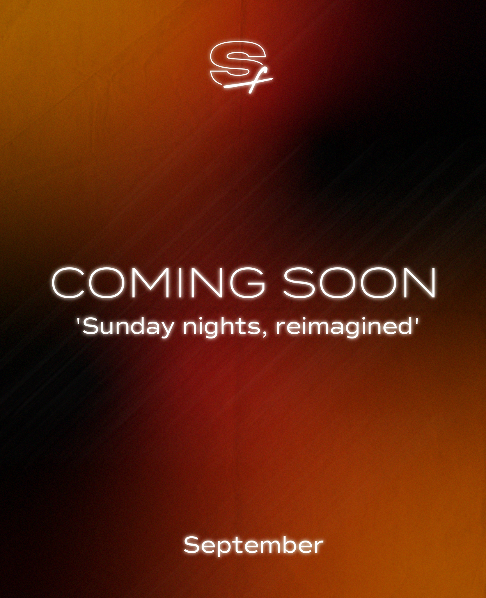
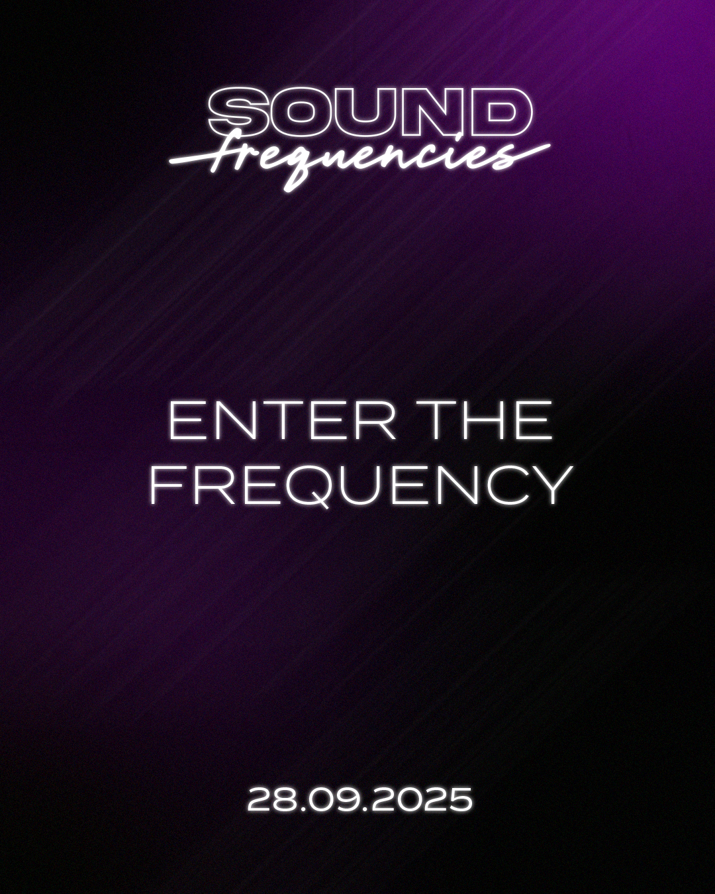
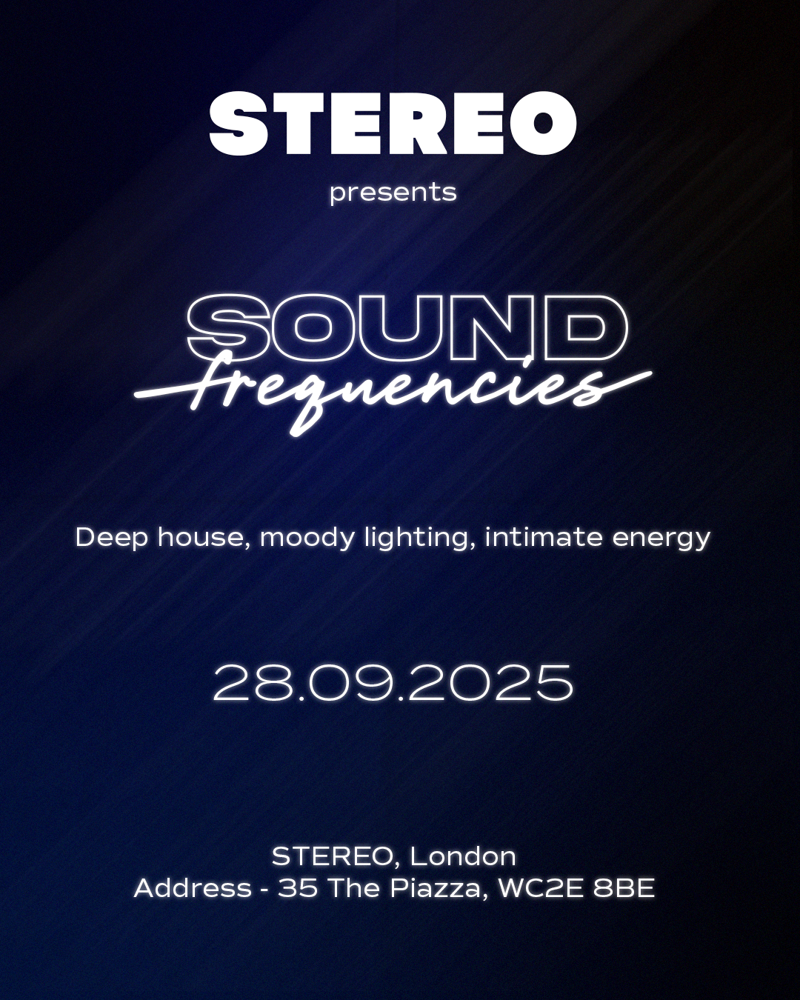
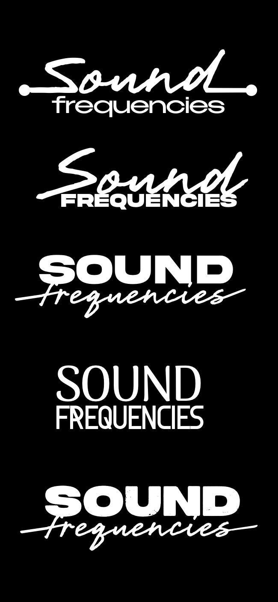
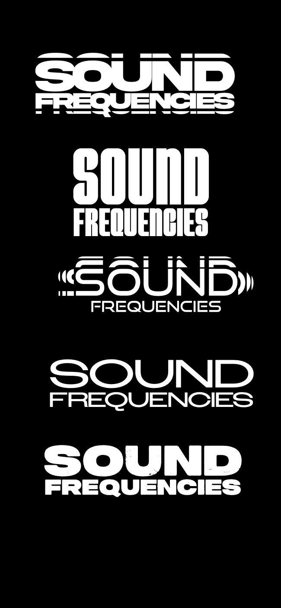
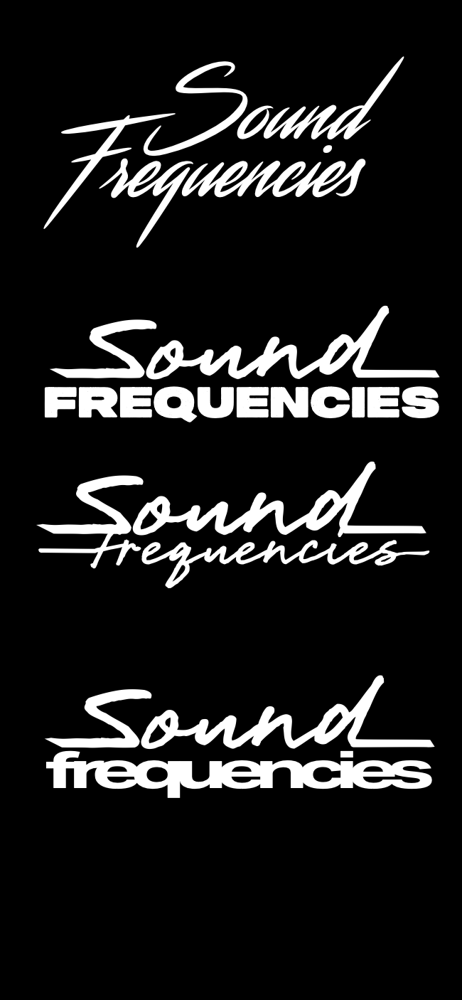
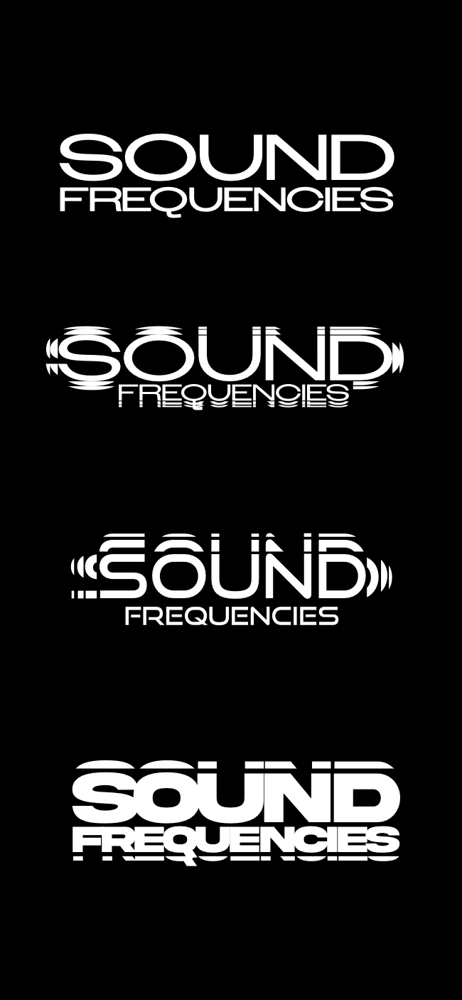
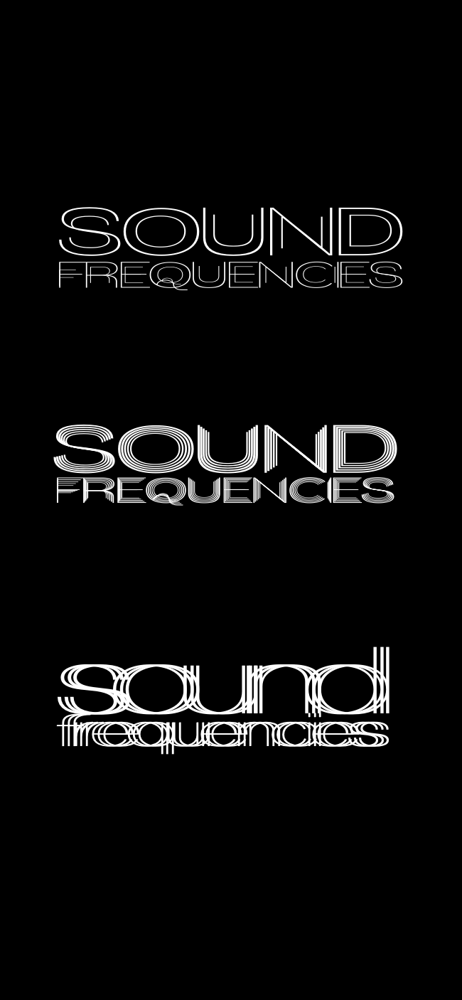

Sound frequencies
Direction Artistique, Identité Visuelle
Client : Eva Banks, Duat
Lieu : STEREO Covent Garden, London
Eva Banks et Duat, deux DJ basé à Londres, ont lancé un concept de soirées mensuelles centré autour de la musique Deep Houses. Ils recherchaient une identité visuelle dynamique, capable de vivre sur tous les supports de communication digitale et physique.
J'ai conçu un logotype adaptatif basé sur la représentation graphique des fréquences sonores. Au-delà du signe, j'ai développé une charte graphique vibrante et des déclinaisons animées (motion design) qui traduisent l'évolution du tempo de la soirée.
La recherche graphique s'est portée sur la visualisation des ondes sonores et leur transformation en motifs géométriques. L'idée était de créer un système capable de "pulser" visuellement comme la musique.
Les planches de recherches explorent différentes épaisseurs de traits et de rythmes visuels, cherchant le point d'équilibre entre abstraction mathématique et énergie nocturne londonienne.









